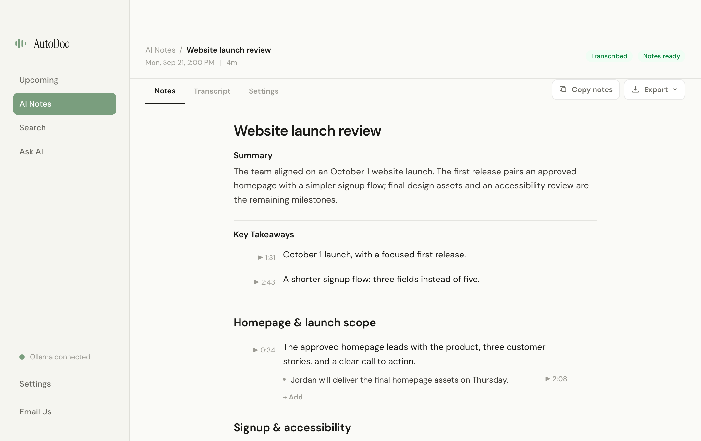

AutoDoc is a free, open-source meeting notes app for Mac and Windows. It transcribes meeting audio and generates notes locally, with a screen recording you can revisit from available timestamps. If you are considering a Granola alternative because you want local processing and replayable recordings, those are the differences to look at first.
No meeting bot, AutoDoc account, or AI API key required. Allow roughly 10 GB for initial setup and extra space for recordings. 8 GB RAM is supported; 16 GB or more is recommended.
Start with a summary, then explore the conversation by topic. Edit the details, or jump from an available timestamp back to the screen recording.

This is a desktop-workflow comparison, not an exhaustive review. Shared capabilities are labeled as shared. Comparison checked September 22, 2026.
| Dimension | AutoDoc | Granola |
|---|---|---|
| Meeting transcription and AI notes | Processed locally with downloaded models. Privacy details. | Desktop audio is passed to a transcription provider, and notes use external AI providers. Transcription · Security. |
| Meeting storage | Recordings and meeting data stay on your computer. Stored meeting data uses AES-256-GCM. Operating-system credential storage protects the key when it is available. Encryption details. | Notes are stored in Granola's encrypted cloud infrastructure. Cloud storage is not the same thing as public or unencrypted notes. Security. |
| Recorded playback | Screen recording and audio stay available for timestamp-based review. | The desktop workflow does not retain audio or video recordings for replay. Transcription. |
| Visual context | Replay the captured screen recording. Notes come from the transcript, not from a vision model reading the screen. | An experimental, beta-only shared-screen feature can attach screenshots to notes. Those screenshots are uploaded. Shared screens. |
| Desktop platforms | Apple Silicon, macOS 14 or later, and Windows 10 or later on x64. Intel Macs and Windows on ARM are not supported. | Mac and Windows. This is a shared capability, not an AutoDoc advantage. Transcription. |
| Meeting bot | Does not join the call as a bot. | Does not join the call as a bot. Shared capability. Transcription. |
AutoDoc source is AGPL-3.0 on GitHub. Ready-to-use installers are on the Mac and Windows download pages.
Local processing means your computer does the work. AutoDoc needs initial model downloads, storage for recordings, and time to process meetings. 8 GB RAM is supported, while 16 GB or more is recommended. Intel Macs and Windows on ARM are not currently supported. AutoDoc labels mic and system audio separately; it does not identify each remote speaker.
Notes are generated from the audio transcript. The video is there for you to replay, not because AutoDoc analyzes the contents of your slides or screen with a vision model.
Choose AutoDoc when local processing, source you can inspect, and replayable recordings matter. Choose a cloud-hosted workflow if that fits the way you already work. AutoDoc does not replace every Granola integration or shared workspace feature.
Apple Silicon Mac on macOS 14+, or Windows 10+ x64. 8 GB RAM is supported; 16 GB or more is recommended. Full requirements.
Granola is a separate product. AutoDoc is not affiliated with or endorsed by Granola.